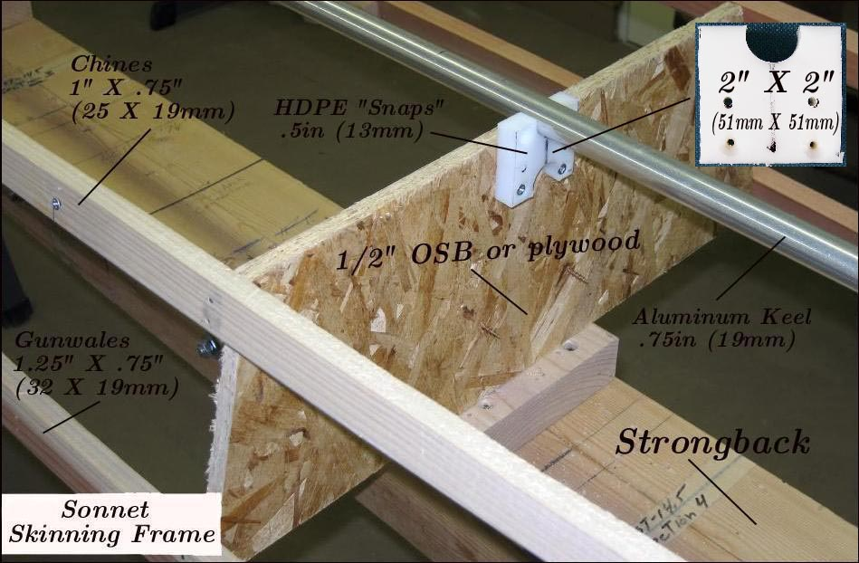

| Sonnet 16 (Skinning Frame) 21" and 22.5" beam versions | Menu Last Page Next Page |
|

The Offsets (HB) provided represent the width of the boat including gunwale and chine stringers. The station offsets must be reduced by the width of the gunwale and chines stringers to arrive at the Sonnet 16 ( 21") beam. If you cut out the stations based on the offsets you will have the optional Sonnet 16 ( 22.5") width kayak. After cutting out the stations based on the offsets provided, either use them for a 22.5" beam or reduce their width by an amount equal to the width of the stringers on each end for the 21" beam version. That will normally be 3/4" (19mm) per side. Station spacing is provided in the "Cross Section Spacing" chart located on the Sonnet Offsets page. Use the {Back} key to return.
Inexpensive OSB stations are used to reduce costs. Plywood is an alternative. The stringers can be made from any soft wood available. Those pictured above are made from redwood and are nailed to the stations with 2.5" (64mm) finishing nails. Wood screws can also be used. The aluminum keel will become part of the finished boat. The keel and stems will be removed from the frame along with the completed PVC hull skin. The keel is connected with HDPE "snaps" as described in the "HDPE Cross Section" and "Frame Maintenance" sections of the Folding Kayak Builders Manual. Use the {Back} key to return. |
|